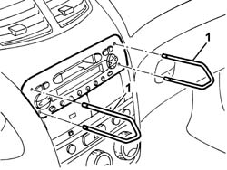
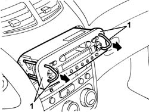
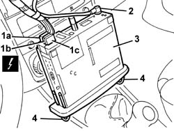

5570T80 car radio unit - r+r
- Path
- Procedures > 55 ELECTRICAL EQUIPMENT > 5570 ACCESSORIES > 5570T car radio and car telephone > 5570T80 car radio unit - r+r
- Kind
- repair procedure (removal / refitting; the operation number is the code)
- Applies to
- all engines; all production periods
- Interactive page
- https://sloeber94.github.io/elrnDB-a147/en/#/3025597
Applies to: all engines; all production periods
 Removing
Removing
 Refitting
RefittingUse the radio removal tools supplied.
1. Fit both tools into the slots on the front of the radio and push in until the mechanism holding the radio in place clicks open.

Applies to: all engines; all production periods
1. Pull out the radio using the tools.

Applies to: all engines; all production periods
1. Disconnect electrical connections (1a), (1b), (1c).
 | Name | Connector |
|---|---|---|
1a | Radio |
| Name | Connector |
|---|---|---|
1b | Radio |
| Name | Connector |
|---|---|---|
1c | Radio |
2. Disconnect the aerial connection.
3. Recover the radio set.
4. Release the tools and take out.

Applies to: all engines; all production periods
Refitting
RemovingCheck that the radio set is undamaged.
Connect the electrical connections and the aerial lead.
Fit the radio into its compartment, taking care not to compress the electrical wires.
Push the radio fully home until it locks in place.
Check the radio is working properly.
Topics linked from this page (3)
Topics that link to this page (14)
- 3330D11 brake servo - r r including seperation from master cylinder - facia lining removed for rhd version
- 5020L10 additional heater system boiler - r r
- 5040A80 expansion/connection pipe - r r
- 5040B30 expansion valve (tube orifice) - r+r
- 5040C10 air conditioner box - r+r
- 5040C50 air conditioner heater radiator - r+r
- 5040C64 a/c evaporator - r+r
- 5040D15 control unit with automatic duel zone air conditioner knobs and buttons r r
- 5040D76 air contitioner distribution flap control motor - r r
- 5040D84 air conditioner left hand air mixer flap control motor - r r
- 5040D86 air conditioner right hand air mixer flap control motor - r r
- 5040D90 air conditioner system wiring bundle - r r
- 7040A10 instrument facia trim - r+r
- 7040A80 compartment unit on facia r r